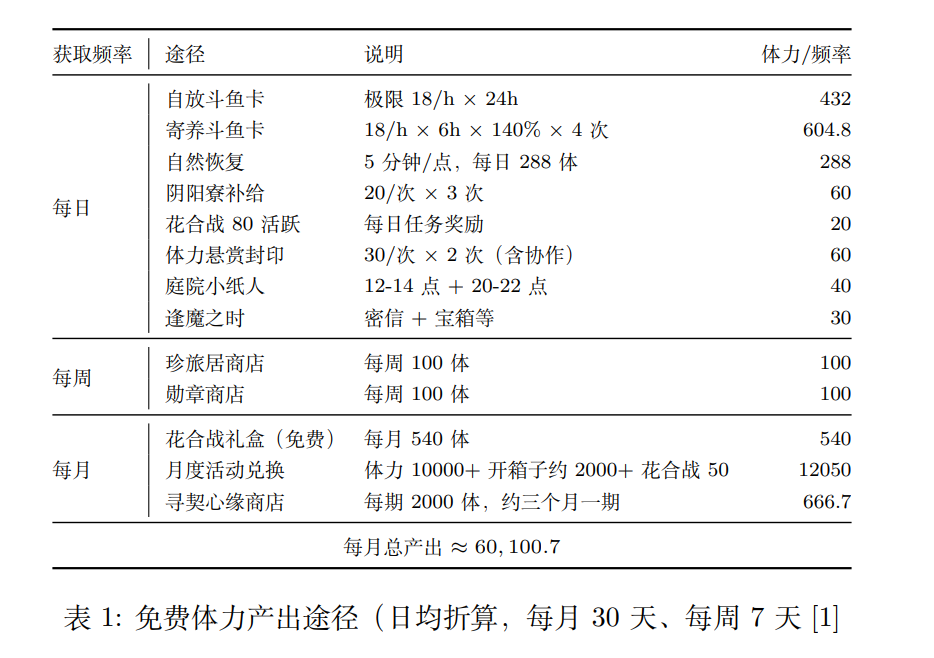
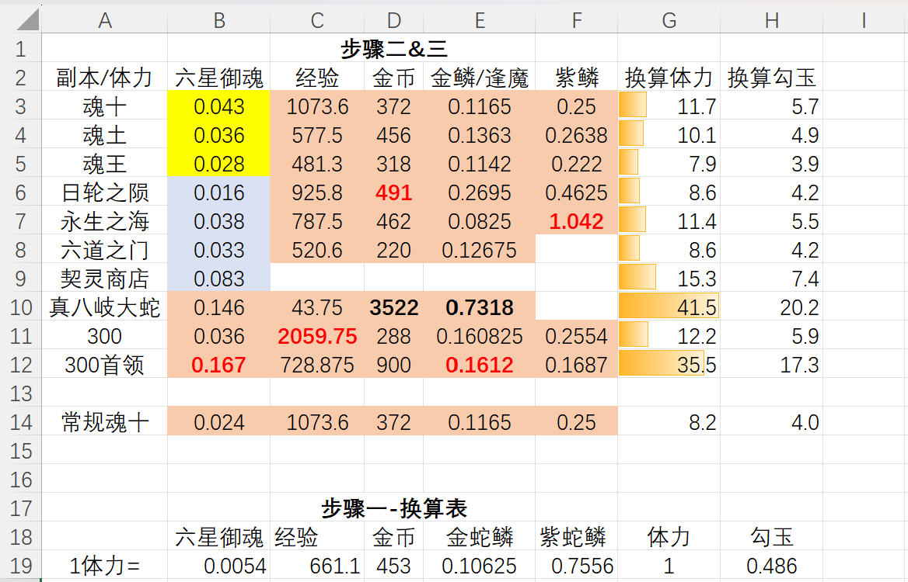
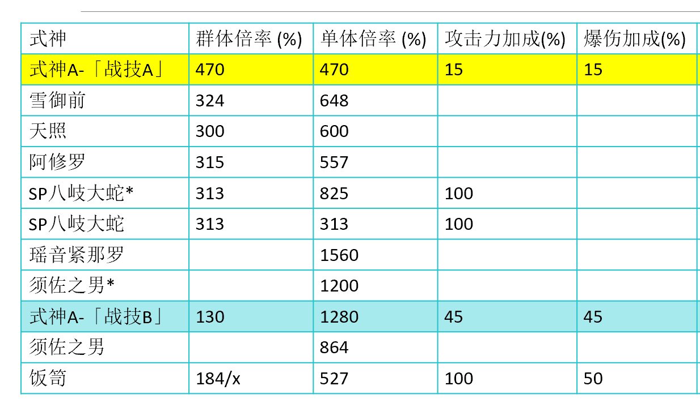

《阴阳师》数值系统拆解分析
系统性拆解《阴阳师》从基础属性、抽卡概率到体力经济的完整数值框架，通过数据建模验证核心公式与设计规律，并基于分析成果完成原创式神设计。
项目展示
式神升级升星属性模型验证报告
核心伤害公式的验证与模拟计算器
抽卡系统概率模型分析与期望成本计算报告
核心资源“体力”的产出-消耗平衡分析

全面盘点体力的产出与消耗途径，并为不同活跃度的玩家画像建立资源流动模型。
主流PVE活动“体力-收益”性价比（ROI）分析报告

对几个核心PVE玩法进行量化分析，计算出单位体力能换取的等效核心价值物。
新SSR式神设计案

整合前七个任务的分析和理解，基于对《阴阳师》现有数值体系的理解，从零到一设计一个全新的、平衡的、且有吸引力的式神。